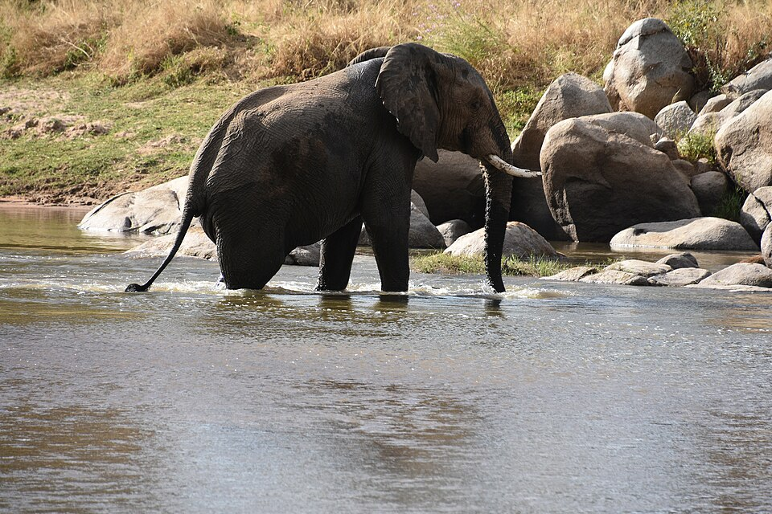
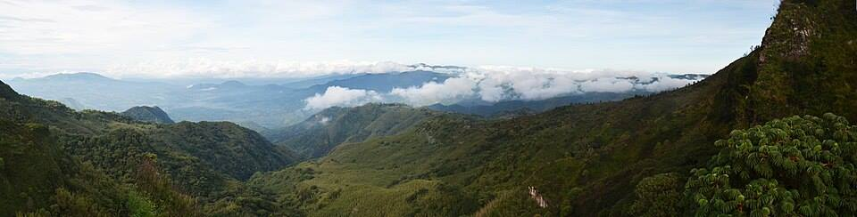
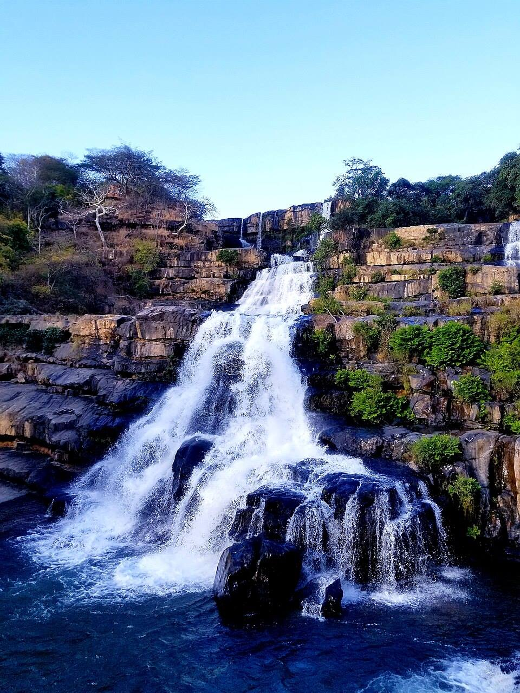
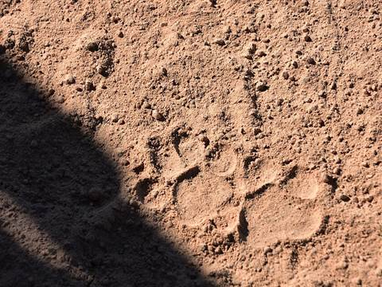
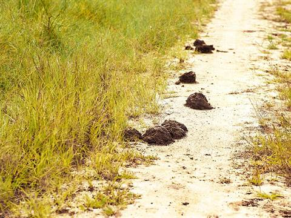
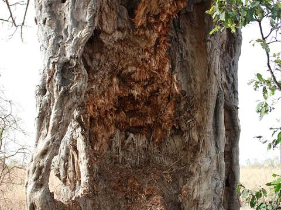
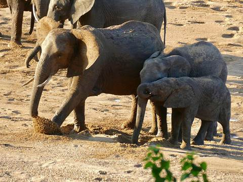
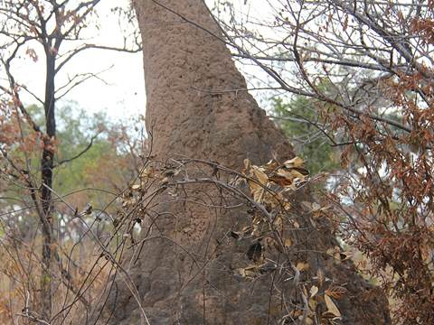
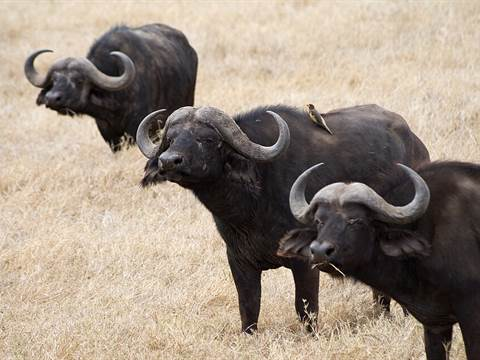

Parte 2 · Fauna
Chi vive qui
Un atlante tascabile per i tre luoghi selvaggi del nostro viaggio: chi incontreremo, come riconoscerlo, dove guardare.
Prima di salire in jeep
Tre parchi, tre modi di essere Africa
Il Ruaha è il pezzo forte. È uno dei parchi più grandi della Tanzania, circa 20.000 km², e in molti punti non incontrerete altre jeep per ore. Si trova in una zona di confine biologico: qui la fauna dell'Africa orientale incontra quella dell'Africa australe. Per questo è uno dei pochi posti dove si vedono insieme il kudu maggiore e il kudu minore, l'antilope nera e la roana, e dove la gazzella di Grant è all'estremo sud del suo areale. Il cuore del parco è il Grande Ruaha, un fiume largo e sabbioso che nella stagione secca diventa una catena di pozze. Intorno ci sono baobab, colline di miombo e pianure di acacia.
Mikumi è più piccolo (circa 3.230 km²) e più accessibile: la statale A7 Dar es Salaam–Iringa lo attraversa da parte a parte. Il cuore del parco è la piana alluvionale del fiume Mkata, una prateria aperta che molti chiamano il «piccolo Serengeti». È il posto ideale per vedere giraffe, zebre, gnu ed elefanti contro un orizzonte aperto. A sud confina con l'enorme ecosistema di Nyerere (l'ex Selous). Nel nostro programma Mikumi non ha un safari dedicato: lo attraversiamo in bus il 10 dicembre, sui circa 50 km di statale che tagliano il parco. Dal finestrino si vedono spesso elefanti, giraffe, zebre, impala e babbuini.
Mpanga Kipengere è un'altra storia. È una riserva d'altura, tra circa 1.100 e 2.800 metri, fatta di foresta montana, praterie e cascate. Qui non si viene per i grandi mammiferi: si viene per i fiori, gli uccelli e i camaleonti che vivono solo su questi altopiani. Gli animali sono più piccoli e più schivi: duiker, klipspringer, cercopitechi, babbuini.
Come si leggono le schede
Probabilità di avvistamento
Ogni specie ha un indice per ciascuno dei tre luoghi. È una stima per un viaggio come il nostro, a dicembre: nel Ruaha un pomeriggio, una notte e un'alba di game drive; a Mpanga Kipengere una giornata a piedi e in jeep; a Mikumi l'attraversamento in bus, quindi per Mikumi le probabilità valgono per chi ci fa un safari e dal bus vanno ridimensionate. Niente safari notturni: nei parchi nazionali non sono previsti. Le specie notturne sono segnate con ☾: con un po' di fortuna si vedono all'alba, al tramonto o intorno ai campi.
La vedremo quasi certamente, spesso più volte.
Presente e osservata con regolarità, ma serve un po' di fortuna.
Presente ma elusiva, notturna o poco numerosa: vederla è un colpo di fortuna.
Assente, oppure presenza non documentata da fonti affidabili.
Fonti: TAWA (Mpanga Kipengere), percentuali di avvistamento raccolte da Expert Africa nel Ruaha, studi con fototrappole del Ruaha Carnivore Project e della Rufford Foundation, guide di campo (Kingdon). Gli indici sono valutazioni dell'autore, verificate l'11/11/2026. Per Mikumi i dati pubblicati sono più scarsi: le stime sono più prudenti.
Ruaha
Grandi branchi di leoni, licaoni, kudu, antilopi nere e roane. Il fiume è il filo conduttore di ogni game drive.
Mikumi
La piana del Mkata: praterie aperte, ippopotami nelle pozze, giraffe ed elefanti ben visibili.
Mpanga Kipengere
Altopiani, cascate e foreste: piccoli mammiferi, uccelli che vivono solo qui, fioriture.
L'atlante
Le specie
Tocca una scheda per aprirla. Il cerchio tratteggiato sulla foto segna la specie come «avvistata»: la lista resta salvata solo su questo telefono e funziona anche senza rete.
Prima di partire, con il wifi
La guida funziona anche senza connessione. Le foto grandi delle schede però si salvano solo quando le aprite. Toccate qui per salvarle tutte adesso (circa 12 MB): al villaggio e nel Ruaha il segnale sarà scarso.
Avvistati!
La nostra checklist
In gruppo
La sera, prima di cena, confrontate le liste e fate la classifica di chi ha visto più specie. Chi avvista per primo un leopardo ha diritto a una Kilimanjaro offerta dal gruppo (sì, è anche il nome di una birra).
Birdwatching
Guardare in alto
Arrivate in Tanzania pensando ai leoni e ripartirete parlando di ghiandaie marine. Succede a quasi tutti. Il Ruaha è una Important Bird Area di BirdLife International, e le liste di specie del parco vanno da circa 450 a oltre 570, secondo la fonte. Dicembre è il momento migliore dell'anno: da novembre ad aprile alle specie residenti si aggiungono i migratori arrivati dall'Europa e dall'Asia e quelli che si spostano all'interno dell'Africa. Con le prime piogge, in più, molti uccelli indossano il piumaggio nuziale.
Non serve essere esperti. Bastano un binocolo nella jeep, la pazienza di fermarsi due minuti in più vicino a un albero di acacia fiorito e l'abitudine di chiedere alla guida «what's that bird?». Le guide tanzaniane sono quasi sempre ottimi birdwatcher e conoscono i nomi inglesi di centinaia di specie.
Le specialità tanzaniane del Ruaha
Tre specie vivono solo in Tanzania, e il Ruaha è uno dei posti migliori per vederle: il bucero dal becco rosso della Tanzania, che porta il nome del parco, lo storno cenerino e l'inseparabile dal collare giallo. Gli uccelli degli altopiani di Kipengere e Kitulo, alcuni dei quali vivono solo lì, sono nel prossimo capitolo.
Chi arriva dall'Europa a dicembre
Molti uccelli che vedrete li conoscete già, magari senza saperlo: passano l'estate in Italia e l'inverno qui. Tra i più facili da notare ci sono la cicogna bianca, il gruccione, la ghiandaia marina, l'aquila delle steppe, la rondine, l'averla piccola, la cutrettola gialla, il luì grosso, il culbianco e il piro piro boschereccio nelle pozze. Secondo alcune fonti, a dicembre e gennaio il Ruaha ospita anche il raro falco della regina, che nidifica sulle isole del Mediterraneo, Sardegna compresa.
Altopiani e Kitulo
Il giardino sopra le nuvole

Lasciata la savana, la strada sale per ore tra campi di mais, piantagioni di tè e boschi di pini ed eucalipti, e l'aria cambia. A Mpanga Kipengere, tra circa 1.100 e 2.800 metri, il mondo si fa verde, umido e fresco. Le colline sono coperte di praterie e di lembi di foresta montana (la riserva ne conta più di 17 tipi diversi), e dappertutto scende acqua. La più famosa è quella delle cascate Kimani, il luogo più visitato della riserva. Qui non si viene per i grandi mammiferi. Si viene per la luce, la nebbia che sale dalle valli, gli uccelli che non vivono da nessun'altra parte e i fiori.
Poco più a sud-ovest, dove la catena dei Kipengere incontra i Monti Poroto, c'è l'altopiano di Kitulo, a circa 2.600 metri. Gli abitanti lo chiamano Bustani ya Mungu, «il giardino di Dio», e dal 2005 è un parco nazionale di circa 413 km². È stato il primo parco dell'Africa tropicale istituito soprattutto per proteggere la flora. Sulle sue praterie crescono circa 350 specie di piante, tra cui circa 45 orchidee terrestri. Alcune specie, come Impatiens rosulata o Brachystelma kituloensis, esistono solo qui. La fioritura va da novembre ad aprile, con il picco tra dicembre e marzo: nelle settimane del nostro viaggio.
Nella foresta di Livingstone, la più grande della catena, vive il kipunji, una scimmia che gli scienziati hanno scoperto solo nel 2003. Nelle stesse foreste vivono camaleonti presenti solo su questi monti. Negli altopiani c'è ancora molto da scoprire.

Fonti: Wikipedia (Kitulo), Tanzania Tourist Board, American Orchid Society (chikanda), TAWA, BirdLife International. Per filtrare le specie di questo capitolo usate i filtri «Altopiani» e «Fiori e piante» dell'atlante.
Come si legge la savana
Indizi, impronte, voci
Le guide tanzaniane trovano gli animali prima di vederli. Una fila di impronte fresche sulla pista all'alba, un gruppo di impala che fissa un cespuglio, gli avvoltoi immobili su un albero secco, un babbuino che abbaia: per loro la savana è un giornale da leggere. Non diventerete tracker in due settimane, ma imparare le basi cambia il modo di stare in jeep: si smette di aspettare che gli animali compaiano e si comincia a cercarli.
Dicembre è un buon mese per imparare. Dopo i temporali della notte il fango e la sabbia umida delle piste conservano impronte nitidissime, e la mattina presto sono tutte fresche: qualsiasi orma vediate è passata da lì poche ore prima.
1 · Le orme
Quattro forme di base bastano per orientarsi. Le misure sono indicative e si riferiscono all'impronta anteriore di un adulto.
Dita tonde, niente unghie (sono retrattili). Impronta più larga che lunga e un po' asimmetrica. Cuscinetto grande, con tre lobi alla base. Il ghepardo fa eccezione: le sue unghie, solo in parte retrattili, spesso si vedono.
Impronta più lunga che larga e simmetrica, con le unghie ben visibili davanti alle dita. Nella iena il piede anteriore è molto più grande del posteriore, perché porta il peso del torace massiccio.
Due mezzi zoccoli affiancati, come un cuore rovesciato. Le punte più strette indicano la direzione di marcia. Le orme di bufalo sono tonde e massicce; quelle di giraffa grandi, allungate e molto distanziate.
Un grande cerchio, con una trama di «crepe» della pianta del piede, unica per ogni individuo. Il piede posteriore lascia un ovale più allungato. La regola dei tracker: la circonferenza del piede anteriore moltiplicata per due è circa uguale all'altezza al garrese.

Altre orme da riconoscere: l'ippopotamo lascia quattro dita tonde a ventaglio e scava nei canneti «sentieri» profondi che portano all'acqua; lo struzzo due sole dita, una molto più grande dell'altra; il coccodrillo e il varano una scia della coda tra le impronte dei piedi; i serpenti una traccia ondulata continua.
2 · I segni di presenza





Avvoltoi
Avvoltoi in cerchio nel cielo cercano. Avvoltoi posati sugli alberi vicino al suolo aspettano: c'è una carcassa sotto, spesso ancora sorvegliata da leoni o iene che impediscono loro di scendere.
Sterco di iena
Bianco come il gesso, quando è secco: le iene digeriscono le ossa e ne eliminano il calcio. Le iene usano sempre le stesse latrine.
Latrine dei dik-dik
Piccoli mucchi di palline sempre negli stessi punti, ai bordi del territorio di una coppia.
Graffi sugli alberi
Segni verticali sulla corteccia ad altezza d'uomo, sugli alberi inclinati: sono le «affilature» di un leopardo. Se tra i rami c'è una carcassa appesa, il leopardo è vicino.
Polvere e strisce nell'erba
Erba appiattita e piste larghe che portano all'acqua: un passaggio regolare di bufali o elefanti. Dove l'erba è schiacciata in un cerchio, qualcuno ha dormito.
Odori
Un odore dolciastro e penetrante vicino a un cespuglio può essere la marcatura di un leopardo o di una civetta. L'odore di carogna si sente prima di vedere la carcassa.
3 · I versi
Molti animali li sentirete prima di vederli, soprattutto di notte nei campi tendati. Ecco i versi da riconoscere, con una trascrizione approssimativa e il momento migliore per ascoltarli.
| Chi | Come suona | Quando e perché |
|---|---|---|
| Leone | Una serie di ruggiti profondi, che vanno spegnendosi in grugniti: «oooh-OOOH… uh-uh-uh». | Di notte e all'alba. Segna il territorio: si sente fino a 8 km. |
| Leopardo | Un raschio ritmico e rauco, come una sega sul legno: «hrr-hrr-hrr». | Di notte, raramente. Segnala la propria presenza agli altri leopardi. |
| Iena macchiata | Un «uuu-uup» che sale di tono, ripetuto. Le «risate» sono rare e acute. | Tutta la notte. Il richiamo serve a radunare il clan. |
| Sciacallo | Un ululato acuto e tremolante, seguito da guaiti. | Al tramonto e di notte. |
| Ippopotamo | Grugniti profondi e cavernosi, come una risata grassa: «HUH-huh-huh-huh». | A qualsiasi ora vicino al fiume, più forte al tramonto. |
| Elefante | Il barrito è uno squillo di tromba. Più spesso si sente un brontolio basso, come uno stomaco affamato. | Il barrito indica eccitazione o allarme; il brontolio è un modo per restare in contatto. |
| Zebra | Un abbaio ansimante, a scatti: «kwa-ha, kwa-ha». | Durante il giorno, per tenere unito il gruppo. |
| Babbuino | Un abbaio a due tempi: «wa-HOO!». | È un allarme: spesso indica un leopardo vicino. |
| Impala | Uno sbuffo nasale e secco. Nella stagione degli amori i maschi «ruggiscono» con una serie di sbuffi rauchi. | Lo sbuffo è l'allarme: c'è un predatore. |
| Kudu | Un abbaio fortissimo e secco, che sembra quello di un cane. | Allarme, nel fitto della boscaglia. |
| Cercopiteco verde | Squittii acuti, diversi per ogni predatore: aquila, leopardo, serpente. | Allarme: guardate dove guardano le scimmie. |
| Aquila pescatrice | Uno squillo acuto e ripetuto, «uii-a-kiu-kiu-kiu», a testa all'indietro. | Soprattutto al mattino, in coppia. Ascolta su xeno-canto |
| Bucorvo cafro | Un «bum… bum-bum» profondo, come un tamburo lontano. | All'alba, si sente a chilometri. Ascolta su xeno-canto |
| Galagone | Un pianto lamentoso, come quello di un neonato. | Di notte, vicino alle tende. |
| Faraona | Un coro metallico e rumoroso di «kek-kek-kek». | All'alba e al tramonto. Esplode quando il gruppo vede un predatore. |
Il consiglio dell'autore
Prima di partire, una sera, ascoltate su YouTube o su xeno-canto i versi di leone, iena e ippopotamo. La prima notte in tenda nel Ruaha, quando li sentirete a pochi metri, saprete chi sta parlando e dormirete molto meglio.
4 · Il linguaggio del corpo
Tutti guardano nella stessa direzione
Impala, zebre o giraffe immobili, con le orecchie dritte e lo sguardo fisso nello stesso punto: c'è un predatore. Seguite i loro occhi.
Un elefante che vi fronteggia
Orecchie spalancate, testa alta, un passo avanti, magari un barrito: è un avvertimento. La jeep deve allontanarsi con calma, senza accelerare di colpo.
Un ippopotamo che sbadiglia
Non ha sonno: mostra i canini. È una minaccia.
La coda del leone
Un leone sdraiato che muove la coda a scatti è infastidito. Se la jeep è troppo vicina, è il momento di indietreggiare.
Jeep ferme
Tre o quattro jeep ferme in mezzo al nulla di solito significano un felino. Ma il Ruaha è grande: spesso il meglio lo trovate da soli.